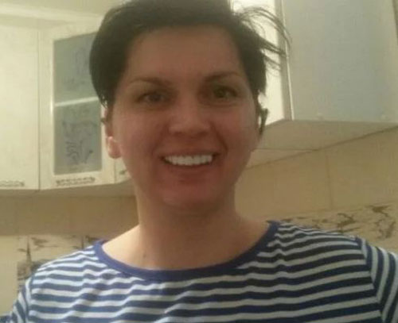

Όμορφο lifehack: χαμόγελο του Χόλιγουντ χωρίς να πάτε στον οδοντίατρο
Δυστυχώς, δεν είναι ο κάθε άνθρωπος ευτυχισμένος ιδιοκτήτης τέλειων δοντιών. Οι διορθωτικές οδοντιατρικές επεμβάσεις, που εξαλείφουν τις ατέλειες στην οδοντοφυΐα, κοστίζουν πολύ. Το ίδιο μπορεί να ειπωθεί και για τη σύγχρονη προσθετική.
Ευτυχώς, τώρα είναι ο 21ος αιώνας και αυτή τη στιγμή ένα όμορφο χαμόγελο δεν χρειάζεται να γίνει με τη βοήθεια επίπονων διαδικασιών και άσκοπων δαπανών. Το 2021 στις ΗΠΑ δημιουργήθηκαν οι μοναδικοί αφαιρούμενοι καπλαμάδες, που ονομάζονται Snap-On Smile.
Τέτοιοι καπλαμάδες επιτρέπουν σε οποιονδήποτε να αποκτήσει ένα υπέροχο χαμόγελο. Το μοναδικό Snap-On Smile είναι μια υπέροχη συσκευή, που συνδυάζει τις λειτουργίες της ευθυγραμμιστών και καπλαμάδων.
Η συσκευή κατασκευάζεται στο εργοστάσιο, σε εξοπλισμό υψηλής ακρίβειας, χρησιμοποιώντας πρωτοποριακή τεχνολογία. Αυτό είναι ένα αδιαμφισβήτητο πλεονέκτημα, σε σχέση με άλλους καπλαμάδες, που δημιουργήθηκαν με τις χειροτεχνικές μεθόδους με βάση τα συμβατικά οδοντιατρικά εργαστήρια. Η εγκατάσταση ενός εξαιρετικά λεπτού, ισχυρού, βολικού σχεδίου είναι δυνατή στο σπίτι.
Μια τέτοια διαδικασία είναι εγγυημένα ανώδυνη και θα δώσει την ευκαιρία να δείξετε στους άλλους ένα όμορφο κατάλευκο χαμόγελο. Επιπλέον, η τακτική χρήσης του Snap-On Smile συμβάλλει στη σταδιακή διόρθωση του δαγκώματος, στην αποτελεσματική ευθυγράμμιση της οδοντοφυΐας, κατ' αναλογία με ακριβά συστήματα βραχιόνων.
Η χρήση μιας αφαιρούμενης κατασκευής, θα είναι αποτελεσματική για τα ακόλουθα προβλήματα:
- σαγόνι με ανώμαλα δόντια, που αναπτύσσονται σε μεγάλη απόσταση.
- λείπουν δόντια, σπασμένα δόντια.
- παρουσία πελεκητών οδοντικών πλακών.
- σκούρη απόχρωση δοντιών.
- η παρουσία παλαιών, μαυρισμένων γεμισμάτων στα δόντια.
- η παρουσία κακής απόφραξης, τα δόντια που χρειάζονται ευθυγράμμιση.
- Σαγόνι με πολύ μικρά δόντια.

Για την κατασκευή επικαλύψεων, χρησιμοποιείται ένα υψηλής ποιότητας πολυμερές υλικό, το οποίο χαρακτηρίζεται από υψηλά ποσοστά ευκαμψίας.
Το μέγεθος της ελαστικής κατασκευής είναι καθολικό. Έχει ιδιότητες για αξιόπιστη στερέωση, προσαρμογή σύμφωνα με το σαγόνι του ιδιοκτήτη του.
Η συσκευή χαρακτηρίζεται από υψηλή αντοχή στις επιδράσεις των χρωστικών ουσιών από το φαγητό, τη κατανάλωση του κόκκινου κρασιού, του μαύρου τσαγιού, του καφέ, από το κάπνισμα. Δεν θα επηρεάσουν καθόλου την όψη των καπλαμάδων.
Το σχέδιο έχει ιδιαίτερη ικανότητα προσκόλλησης στην επιφάνεια των δοντιών, λόγω αυτού, εξασφαλίζεται η πλήρης επανάληψη της οδοντοφυΐας. Ένα άτομο, που φοράει το Snap-On Smile δεν αισθάνεται ενόχληση, σταματά να αισθάνεται τις πλάκες μετά από 10 λεπτά τοποθέτησης των καπλαμάδων.
Ποια είναι τα πλεονεκτήματα της επιλογής του Snap-On Smile;
- Μπορούν να φορεθούν και από τα δύο φύλα (γυναίκα-άνδρας).
- Δυνατότητα γρήγορης και εύκολης εγκατάστασης κατ' οίκον.
- Δεν χρειάζεται να τροχίζετε τα δόντια πριν την εγκατάσταση.
- Καμία ενόχληση στο στόμα.
- Η δυνατότητα λήψης του φαγητού, του ποτού, χωρίς δυσφορία.
- Η απουσία σκούρων περιοχών υπό την επίδραση των χρωστικών ουσιών, που υπάρχουν σε ποτά και σε τρόφιμα.
- Ανοσία στα ενεργά συστατικά, που περιέχονται στον καπνό του τσιγάρου.
- Προσιτή τιμή σε φόντο υψηλής ποιότητας.
Σημαντικό!
Θα πρέπει να αγοράσετε γνήσιους καπλαμάδες Snap-On Smile αποκλειστικά στην επίσημη ιστοσελίδα του κατασκευαστή. Η αγορά είναι γεμάτη από τις απομιμήσεις και αντίγραφα αυτών των καπλαμάδων. Οι απατεώνες πωλούν φτηνά, τα κινεζικά αντίγραφα του Snap-On Smile, σε δελεαστικά χαμηλές τιμές.
Ειδικά για τους αναγνώστες του Lifehacker, διορθώνουμε στο άρθρο έναν σύνδεσμο προς τον επίσημο ιστότοπο, όπου μπορείτε να αγοράσετε με ασφάλεια ένα 100% πρωτότυπο προϊόν, που θα πληροί όλες τις αναφερόμενες απαιτήσεις.

Σχόλια ()
Ποιος έχει δοκιμάσει αυτούς τους καπλαμάδες, είναι πραγματικά καλοί;
ΑπάντησηΤα έχω δοκιμάσει! Έχασα τα μπροστινά μου δόντια σε ένα καυγά. Η δουλειά μου απαιτεί άψογο χαμόγελο, επομένως η αγορά του Snap On Smile ήταν σωτήρια για μένα.Τα πήρα εδώ. Η τιμή των επικαλύψεων αποδείχθηκε γελοία, σε σύγκριση με το ποσό που ζήτησε ο ειδικός για την προσθετική. Είμαι ικανοποιημένος με τους καπλαμάδες - το στόμα φαίνεται αξιοπρεπές, δεν υπάρχουν δυσάρεστες αισθήσεις, δεν υπάρχουν προβλήματα στην δουλειά.
ΑπάντησηΚαι γω επίσης) Λόγω των σπάνιων, μικρών δοντιών, είχα ένα μεγάλο κόμπλεξ. Χάρη στην αγορά καπλαμάδων, μπόρεσα επιτέλους να δείξω ένα όμορφο χαμόγελο. Οι καπλαμάδες στερεώνονται εύκολα. Όταν φοριούνται, τα σαγόνια μαζί τους έχουν μια εντελώς φυσική εμφάνιση. Όταν χαμογελάω, δέχομαι φιλοφρονήσεις από στενούς ανθρώπους, συναδέλφους. Κρίμα που δεν αγόρασα νωρίτερα μια τόσο πολύτιμη συσκευή.
ΑπάντησηΚάποιος να βάλει μια φωτογραφία παρακαλώ!
ΑπάντησηΕδώ είναι μια φωτογραφία, φαίνεται πολύ φυσικό)

ΑπάντησηΗ μαμά εργάζεται στον κοινωνικό τομέα και είναι καθημερινά σε επαφή με κόσμο, οπότε εκτός από άψογη εμφάνιση θα πρέπει να υπάρχει και ένα χαμόγελο. Συμφωνώ είναι δύσκολο να χαμογελάς με προβληματικά δόντια, ειδικά την ώρα που ετοιμάζεσαι για την αντικατάσταση της γέφυρας και των 2 προσθετικών. Για να την κάνουμε να αισθάνεται λιγότερο άβολα, της δώσαμε τους καπλαμάδες αντικατάστασης Snap-on-smile. Και τώρα η μαμά έχει ένα εκθαμβωτικό χαμόγελο του Χόλιγουντ. Λέει ότι είναι βολικά κατά την ώρα των γευμάτων, κατά το βούρτσισμα των δοντιών, δεν υπάρχει απολύτως καμία ενόχληση. Η μαμά φοράει καπλαμάδες 1,5 μήνα, σε αυτό το διάστημα δεν έχουν αλλάξει την απόχρωσή τους, είναι σε άψογη κατάσταση. Είναι ικανοποιημένη)
ΑπάντησηΑυτοί οι καπλαμάδες είναι ένας καλός τρόπος για να βελτιώσετε το χαμόγελό σας. Είναι δύσκολο να διαφωνήσεις με αυτό. Αλλά δεν χρειάζεται να αποδίδεται τις ικανότητες, που είναι ασυνήθιστες για αυτά, όπως η διόρθωση της οδοντοστοιχίας, η διόρθωση του δαγκώματος και επιπλέον, δεν πρέπει να συγκρίνετε τις όψεις από άποψη της λειτουργικότητας με τα συστήματα των βραχιόνων. Ίσως διορθώνουν, αλλά όχι τόσο αποτελεσματικά. Οι ψευδείς ισχυρισμοί, σχετικά με τη διόρθωση του δαγκώματος, χρησιμεύουν μόνο ως αντιδιαφήμιση για ένα υπέροχο προϊόν, που δημιουργήθηκε για έναν εντελώς διαφορετικό σκοπό.
ΑπάντησηΈχω ακούσει για τους αφαιρούμενους καπλαμάδες εδώ και πολύ καιρό - αυτή είναι, καταρχήν, μια καλή εναλλακτική λύση στην ακριβή λεύκανση των δοντιών. Αλλά κατά κάποιο τρόπο δεν τόλμησα να τα αγοράσω νωρίτερα, αλλά πριν από ένα μήνα αποφάσισα να παραγγείλω τέτοιους αφαιρούμενους καπλαμάδες. Παραδόθηκαν αρκετά γρήγορα, γι'αυτό ένα ιδιαίτερο ευχαριστώ. Έμεινα πολύ ικανοποιημένη από την ποιότητα, τα παρήγγειλα εδώ. Τοποθέτησα τους καπλαμάδες πολύ γρήγορα, δεν υπήρχαν προβλήματα. Εφαρμόστηκαν απλώς με ένα τσακ, δεν υπάρχει καμία ενόχληση στο στόμα. Όλα είναι απλά τέλεια. Και ναι, αφαιρούνται εύκολα. Πέντε βαθμοί!
ΑπάντησηΕργάζομαι στο δημόσιο τομέα και καθημερινά επικοινωνώ με τεράστιο αριθμό ανθρώπων. Τα δόντια μου ήταν το κόμπλεξ μου από την παιδική μου ηλικία. Οι γονείς δεν προσπάθησαν να περιποιηθούν και να φτιάξουν τα δόντια μου κατά την παιδική μου ηλικία, απλώς τα ασημοποίησαν. Όλες οι φωτογραφίες από το σχολείο που έχω, είμαι με μαύρα κούτσουρα αντί για δόντια, νομίζω ότι δεν αξίζει να μιλήσω για τη γελοιοποίηση των συνομηλίκων μου. Αλλά οι γομφίοι μεγάλωσαν και δεν με ευχαριστούσαν: οι κυνόδοντες δεν χωρούσαν λίγο και κινούσαν τα δύο μπροστινά δόντια, το χρώμα του σμάλτου είναι κιτρινωπό, με μια λέξη, μακριά από το χαμόγελο του Χόλιγουντ. Ο οδοντίατρός μου, με συμβούλεψε να χρησιμοποιήσω τους αφαιρούμενους καπλαμάδες, είναι φθηνοί και το αποτέλεσμα είναι γρήγορο, πόσο μάλλον να φοράω σιδεράκια για ένα ή δύο χρόνια και να δίνω πολλά χρήματα. Αποφάσισα να κάνω ένα πείραμα και τα φοράω εδώ και ένα χρόνο και είμαι χαρούμενη: τα δόντια μου είναι όμορφα, λευκά, οι όψεις δεν προκαλούν ενόχληση και είναι εύκολο να τα φροντίσω.
ΑπάντησηΗ εγκατάσταση πραγματικών καπλαμάδων είναι μια αρκετά δαπανηρή απόλαυση, δεν μπορούν όλοι να την αντέξουν οικονομικά, αλλά αποδεικνύεται ότι υπάρχει μια καλή εναλλακτική - αφαιρούμενοι καπλαμάδες Snap-On Smile. Αξίζει να τα φορέσετε και το χαμόγελο γίνεται αμέσως τέλειο. Οι καπλαμάδες είναι αρκετά άνετοι, φοριούνται εύκολα (χρειάζεται λίγη εξοικείωση στην αρχή), αλλά κρατάνε αρκετά σταθερά. Γενικά δεν μετάνιωσα που τα αγόρασα, θα τα φοράω μέχρι να πάρω μόνιμους καπλαμάδες στην κλινική. Παρεμπιπτόντως, αν φοράς συχνά το Snap-On Smile, τα δόντια σου γίνονται πιο ίσια, κρίνω από τη δική μου εμπειρία. Η τιμή είναι αρκετά λογική, κατά τη γνώμη μου, λάβετε το υπόψη σας.
ΑπάντησηΜπορείτε σας παρακαλώ να μου πείτε αν αυτές οι όψεις κρατάνε καλά στα δόντια; Δεν πέφτουν;
ΑπάντησηΌχι, δεν πέφτουν, από αυτή την άποψη, δεν υπάρχουν προβλήματα)
ΑπάντησηΣίγουρα, συν η τιμή σε σχέση με τους μόνιμους καπλαμάδες, που τοποθετούνται με σταθερή βάση, είναι πολύ καλύτερη. Μπορείτε να αποκτήσετε ένα όμορφο, κατάλευκο χαμόγελο, με ομοιόμορφα δόντια σε ένα σχετικά χαμηλό ποσό. Αλλά για κάποιο λόγο, πάντα μου φαινόταν ότι τέτοιοι αφαιρούμενοι καπλαμάδες προκαλούν σημαντική ενόχληση στο στόμα, ότι δεν μπορείτε να τους συνηθίσετε, όπως τα σιδεράκια, για παράδειγμα. Λένε όμως, ότι με την καθημερινή χρήση συνηθίζεις και σταματάς να τα νιώθεις στο στόμα σου, λένε ότι είναι κατασκευασμένα από πολύ υψηλής ποιότητας υλικό. Επίσης, με μπέρδεψε το θέμα το πώς θα τρώω με αυτούς τους καπλαμάδες. Αλλά και πάλι, πολλοί λένε ότι είναι αρκετά άνετα και χωρίς κανένα πρόβλημα. Ακόμα τα κοιτάω. Η φροντίδα τέτοιων όψεων είναι απλή, καθώς και τα δόντια μπορούν να ξεκουραστούν προσωρινά από αυτά. Και είναι υπέροχο, που δεν σκουραίνουν με την πάροδο του χρόνου, από το χρωματισμό των τροφίμων και των ποτών, δηλαδή είναι φτιαγμένα από πραγματικά καλό υλικό.
ΑπάντησηΈχω σφραγίσματα στα μπροστινά μου δόντια εδώ και πολύ καιρό, τα έχω αλλάξει περισσότερες από μία φορές, αλλά παρόλα αυτά, υπάρχει ασυμφωνία στο χρώμα των δικών μου δοντιών και στο υλικό του σφραγίσματος. Αποφάσισα, ενώ εξοικονομώ χρήματα για υψηλής ποιότητας, μόνιμες θήκες, να αγοράσω τους αφαιρούμενους καπλαμάδες. Η τιμή είναι αρκετά προσιτή. Η ποιότητά τους είναι καλή. Στην αρχή, δεν ήταν πολύ άνετα, αλλά γρήγορα τα συνήθισα. Τα φοράω στη δουλειά. Δεν τρίβουν τα ούλα, δεν υπάρχουν προβλήματα με τη διήθηση. Κρατούνται σφιχτά, δεν πιέζουν τα δόντια μου. Μπορούν επίσης να φορεθούν εάν δεν υπάρχουν αρκετά δόντια στην οδοντοφυΐα. Πίνω οποιαδήποτε ποτά με αυτά, συμπεριλαμβανομένων των χυμών, του καφέ και του τσαγιού, δεν σκουραίνουν καθόλου. Η φροντίδα τους είναι απλή. Όποιος αμφιβάλλει αν θα τα αγοράσει ή όχι - τα συνιστώ.
ΑπάντησηΤα παρήγγειλα και για μένα. Είναι άνετα, κρατιούνται γερά και μπορείτε να μην ανησυχείτε ότι θα πέσουν έξω την πιο ακατάλληλη στιγμή. Φαίνονται αρκετά φυσικά, δεν προκαλούν ενόχληση, γενικά, δεν βρήκα κανένα μειονέκτημα. Τα βάζω και το χαμόγελο γίνεται αμέσως εκθαμβωτικό. Οι καπλαμάδες είναι από υψηλής ποιότητας πολυμερές υλικό, δεν λερώνονται από τα φαγητά και τα ποτά, θα αντέξουν πολύ, νομίζω.
ΑπάντησηΤώρα στην επίσημη ιστοσελίδα υπάρχει η έκπτωση. Εδώ είναι το site. Τα πήρα πολύ πιο ακριβά και όταν δεν υπήρχε έκπτωση...
ΑπάντησηΠΑΡΑΓΓΕΙΛΕΤΕ